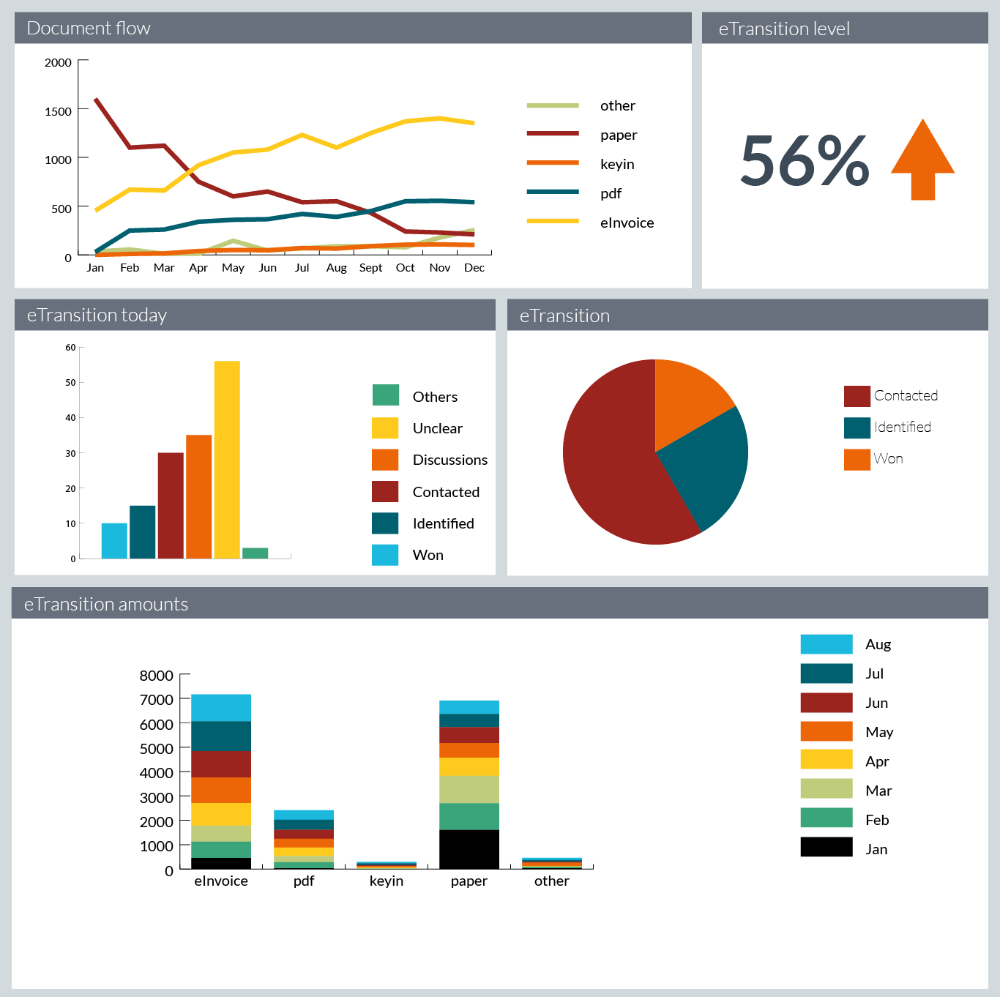

Brand
Brand identity
Respect the brand
Some of the strongest OpusCapita brand characteristics exist to make it seem familiar. Stick to the reasoning of this document.
Respect white space
If possible, give elements more space to make the UI more glanceable. The content needs high attention so keep it easy to perceive, breathable, yet efficient.
Longevity
The design is minimalistic and flat. This should keep the design fresh for a longer period.
OpusCapita Logo Usage
If background are is white, the logo is displayed in orange. White logo color is preferred when it is on top of the background color. Logo may be used in minimized mode only in case there is no option to use the larger logo.
Logo
Logo in white background
Logo in colored background
Minimized logo
Logo safety margins
Logo for favicon
Color scheme
The color scheme is based on selected OC brand colors (Orange, Yellow, Red, Black and Petrol), expanded with additional colors.
Basic colors
Main brand color
The main brand color should not be used too much and preferable as a highlight color instead of in large elements.
Navigation bar colors
Icons on Dark steel background
Icons on White or Light gray background
Gray background
Colors in priority order for graphs with maximum of 5 colors.
Colors in priority order for graphs with maximum of 8 colors.
Colors in graphs - example image.
Typography
Fonts
OpusCapita user interface uses open source Lato Fonts by Łukasz Dziedzic.
Font weights are light, normal and bold.
Fallback fonts are Helvetica Neue, Helvetica, Arial and sans-serif.
Rebranding 3rd party applications to OpusCapita brand - things to consider
To achieve the visual look and feel of belonging to the OpusCapita brand in your service, these matters should be taken into account.
Mandatory
- Use the selected brand and additional colors.
- Show the OpusCapita logo.
- Use correct the logo and background colors.
- Use the OpusCapita logo in footer.
Can be adjusted
- Layout of the content area elements can vary.
- Use the correct typography.
- Use the common login screen look and feel.
- Use the common footer.
Rebranding OpusCapita products to 3rd party brand - things to consider
To achieve the visual look and feel of belonging to the 3rd party brand, these matters should be taken into account.
Mandatory
- Replace OpusCapita colors with 3rd party colors.
- Replace OpusCapita logo with 3rd party logo.
- Use the text "Powered by" and the OpusCapita logo in footer.